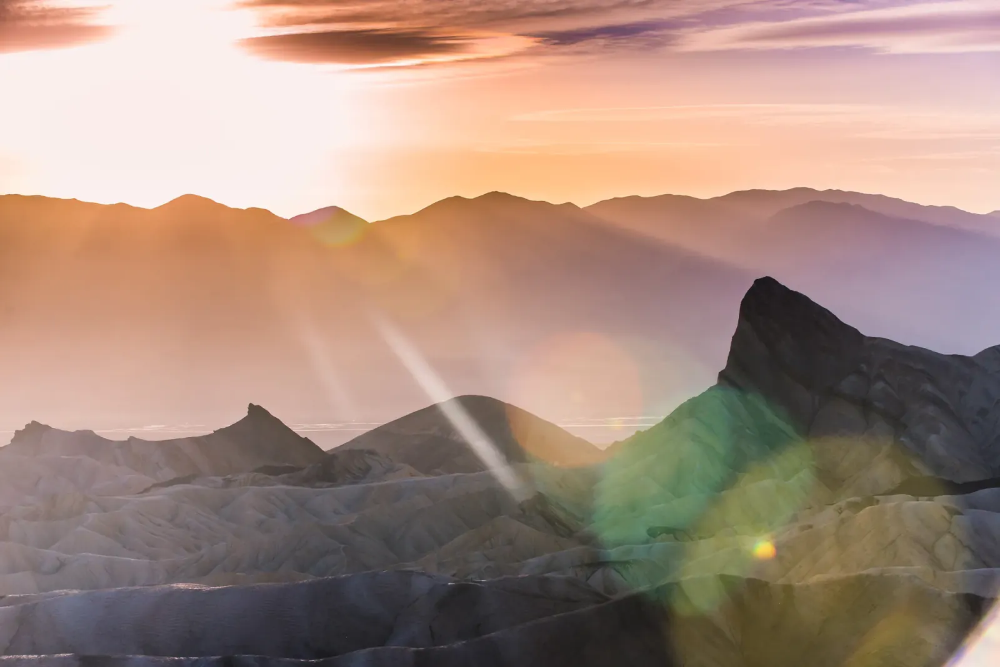

Salt and Starlight
Death Valley is the hottest, driest and lowest national park in the country, so the snow still clinging to its peaks in April felt like a typo. The wrinkled hills of Zabriskie Point turned gold in the low sun, and Manly Beacon stood dark against ridges stacked in peach and violet haze while a green flare bloomed across my lens. Those badlands began as mud on the bottom of a lake that dried up millions of years ago, and the few rains this place gets have been carving them into folds ever since. Out on the Mesquite Flat dunes, the wind had rippled the sand into crisp lines, with bare mountains behind and a heavy sky overhead.
Higher up, in what I believe is the Panamint Range, the desert gives way to forest and snow. Dark conifers blanket the slopes. A cactus bristling with pale spines sits right beside shaggy green shrubs, and white patches linger on the peaks. Ridge after ridge fades into the haze, and far below, the salt flats braid white across the valley floor. Up among the conifers, the dunes and the badlands might as well belong to a different park.


I came back more than a year later, in July, rolling in from the Sierra past red and ochre hills in the evening light. The dog and I stopped at an overlook where the road wound down to a pale valley, and near Wildrose three wild burros eyed me from the rabbitbrush. Then the road climbed into pinyon and juniper, thousands of feet above the valley floor and its furnace, which is the sane way to spend a summer night in Death Valley. I photographed the Milky Way from about ten o'clock until nearly two in the morning. The bright heart of the galaxy hung low in the south, with Jupiter blazing beside it and red Antares not far off, and a tent glowed like a lantern at the edge of the trees. Some of that light set out before anyone had invented writing, and here it was, landing on my sensor. Death Valley is a terrible name for a place with this much going on!